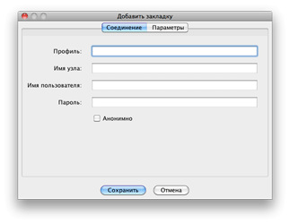
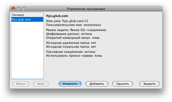

Закладки
Параметры соединений можно сохранять в виде закладок, что даст
возможность быстро устанавливать эти соединения в дальнейшем.
Добавление закладок

Существует три способа добавить закладку на выбранный FTP-узел.
- Через диалоговое окно "Установление соединения".
- Через пункт "Добавить закладку" в меню
"Закладки".
- Через пункт Управление
закладками в меню "Закладки".
Если Вы хотите, чтобы закладка была добавлена после входа на сервер,
проще всего установить флажок Добавить закладку в диалоговом окне
"Установление соединения". После того, как соединение будет
установлено, для данного узла будет сохранена закладка. По умолчанию имя
профиля будет совпадать с именем узла. Изменить его можно через
диалоговое окно Управление закладками.
Если Вы уже вошли на сервер или хотели бы добавить закладку, не входя на
сервер, это можно сделать, выбрав команду Добавить закладку в
меню "Закладки". Откроется окно, позволяющее ввести всю
необходимую информацию.
Управление закладками

Параметры сохраненной закладки можно изменить через диалоговое окно
"Управление закладками", открыть которое можно, выбрав команду
Управление закладками в меню "Закладки". Это окно
позволяет задавать положение закладок в меню, редактировать атрибуты
закладок, создавать новые закладки и удалять существующие.
Глобальные закладки
Есть разновидность закладок, которые можно использовать, но не
редактировать. Такие закладки называются глобальными. Глобальные
закладки по своему назначению не отличаются от локальных, но загружаются
по протоколу HTTP с URL-адреса, который задается в настройках. Данный
URL-адрес должен указывать на действительный XML-файл закладок Secure
FTP 2.5.